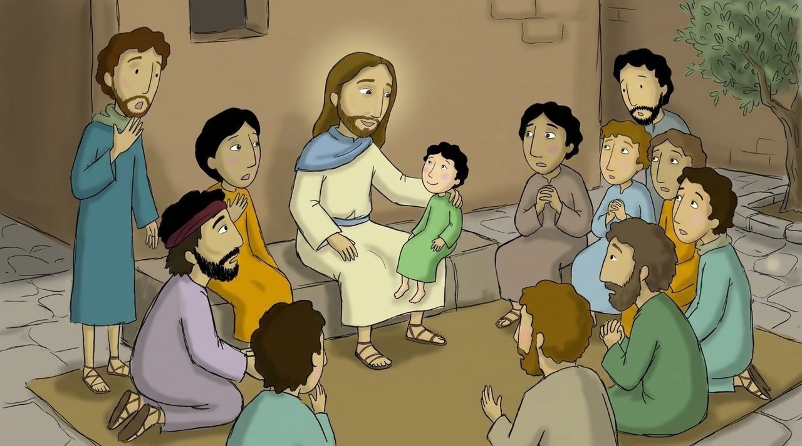

1 · 18:1–9
어린아이를 가운데 세우시다
예수님은 고난을 두 번 예고하셨는데, 제자들은 “누가 크냐”를 물었어요. 예수님은 어린아이를 ‘가운데’ 세우세요. 당시 어린아이는 법적 권리도 지위도 없는 존재였어요.
“누구든지 이 어린아이와 같이 자기를 사람이 천국에서 큰 자니라.” 그리고 작은 자를 넘어지게 하는 것을 엄하게 경고하세요. 연자 맷돌을 목에 달고 바다에 빠지는 것이 낫다고요.
깊이 보기 · ‘돌이켜’
“돌이켜 어린아이들과 같이 되지 아니하면.” 이미 제자인 사람들에게도 ‘돌이킴’이 필요해요. 어린아이의 특징은 순수함보다 ‘의존성’이에요. 스스로 설 수 없음을 알고 아버지께 기대는 거예요.